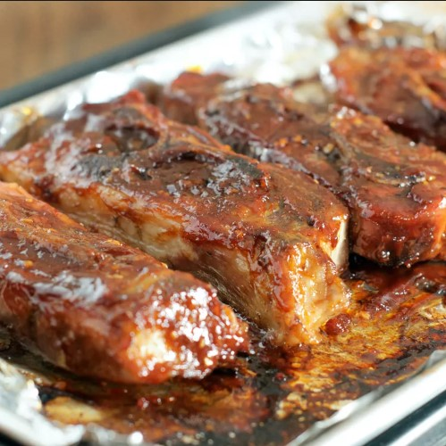

BBQ Ribs

Description
Tasty country-style ribs coated with your favorite BBQ sauce and twice-baked until tender.
Ingredients
- 10 country style pork ribs
- 2 teaspoons minced garlic
- 1 medium lemon, thinly sliced
- 1 (18 ounce) bottle barbeque sauce
Steps
- Preheat the oven to 250 degrees F (120 degrees C).
- Place ribs in a single layer in a shallow baking pan or roaster; salt if desired. Spread garlic on ribs,
then arrange lemon slices on top.
- Bake in the preheated oven until tender, about 2 hours. Drain any grease and liquid. Pour barbeque sauce
over ribs.
- Reduce oven temperature to 225 degrees F (110 degrees C) and cook ribs until sauce bakes into meat, about 1
hour.